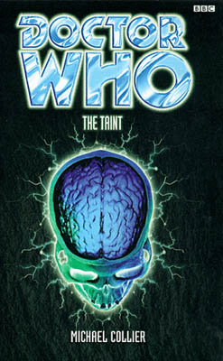

|
The Taint
|
BASIC PLOT DOCTOR COMPANIONS MATERIALISATION CIRCUIT Pg 230 The top secret underground base in Bethnal Green. Pg 245 In the Roley house, in the Doctor's lab. Pg 264 Still in the Roley house, but now at the top of the stairs. Pg 273 London, Earth, 2134AD. PREPARATORY READING CONTINUITY REFERENCES Pg 10 "It had been years since she'd first started travelling with the Doctor, three of them spent without him on the alien equivalent of Skid Row." Not an entirely accurate description of Seeing I, but close. "It's 1963. I spent quite some time here, a long time ago." An Unearthly Child and Time and Relative. "'I bet you were a real hip swinging cat weren't you?' 'Sam, Sam, Sam, please...' said the Doctor, shaking his head. 'You really are exaggerating the idiom of the period.'" In exactly the way that Polly did in The War Machines. Pg 11 "And anyway, I was more an arthritic old buzzard than any cat you might happen to mention." I think the 'arthritic old buzzard' line was The War Machines as well, but I could be wrong. Whichever, it's not unfair. "It was quite pleasant to feel like she'd moved off the Terminator back lot and found herself on Summer Holiday." That'll have been The Face-Eater, then. Pg 13 "This bag. It fits him snugly." These shoes. They fit perfectly! The Telemovie. Pg 25 "Sam was reminded vaguely of the last posh house she'd been in, Norton Silver's place, years ago." Option Lock. Also see Continuity Cock-Ups. Pg 27 "'Race memory,' she said." And yet, surprisingly, this book has nothing to do with Silurians. Pg 29 "The Doctor held her hand briefly, and when he took his own away she was left holding odd-looking notes and coins." As in Remembrance of the Daleks, the Doctor appears to carry Sixties currency. He also appears to bring them to him using that old favourite, transmigration of object, from The Ambassadors of Death. Pg 32 "It's bigger on the inside, honest." Fitz's description of his flat has us screaming 'companion' at him! Pg 47 "I'm delighted to meet you, Mrs Kreiner. Your son seems virtuous and trustworthy." It's possible that the Doctor's been able to see this through his ability to read people's lives as seen in the Telemovie. Or he might just be being sarcastic. Pg 56 "Patented Fight-or-Flight plan No. 10, worked out and practiced in the safety of the TARDIS months ago." The Doctor and Sam's numbered plans have been around for a while now, and take on a special meaning in Unnatural History. "Please, not another scar after what I went through getting rid of the last ones..." The Face-Eater. Pg 68 "Fitz? Where's Sam? Sam, Sam, Sam, where is she?" Bugger. And it was all going so well. The Doctor repeats monosyllables and has done for longer than we care to remember yadda yadda yadda. Pg 73 Brief and unfunny mention of Daleks. Pg 76 "I'll bet you couldn't tell Arthur and Raymond from John Smith and the Common Men." Actually, John Smith is the stage name of the Honourable Aubrey Waites. After careful research here at the Cloister Library, we are prepared to suggest that he began his career as Chris Waites and the Carollers. Gosh, we are surprising; no one would have expected us to know these things. Or that he was first mentioned in An Unearthly Child. Pg 95 The Doctor says 'Sam' eight times in one paragraph. Surely a personal best. Pg 97 "The way to overcome fear is to face it, to understand it." The Doctor's been watching Ghost Light of late, it would appear. "Scared that those microorganisms from Bel..." Beltempest. Pg 148 "Instead he was running down corridors. He bet Sam and the Doctor never did that." Fitz continues his subversion of Doctor Who cliches. Pg 151 "'Where've you been, the moon?' The Doctor nodded, his voice perfectly serious. 'Yes. Once or twice.'" The Moonbase. The Seeds of Death. Timewyrm: Revelation. There are, without doubt, more examples. "Her arm still felt as if it were on fire. She was reminded of being blasted on Janus Prime." The Janus Conjunction. Pg 158 "His words seemed to insert a flash-frame of herself into her racing thoughts. She had dark hair and a whole different life, sitting in a bedsit eating hamburgers on a rainy day." Alien Bodies' Dark Sam, soon to be kind of explained in Unnatural History. Pg 161 "He was scanning for any anachronistic energy readings nearby." Ironically, one of them is going to be his very own TARDIS, in a junkyard fairly nearby. Presumably, he programmed the TARDIS to remove this from his search. Pgs 163-164 "In another time, another body, he might well have appreciated driving in such an enjoyably primitive machine." Reference, one presumes, to the Third Doctor. Pg 164 "If only he'd built interchangeable plates into the Bug he could've taken that; mind you, his road tax wouldn't be valid for nearly forty years." Which means that the VW was uninsured in Vampire Science. How very irresponsible of the Doctor. Pg 199 "'It's just that they exist beyond the wavelengths of human sight.' 'And Gallifreyan sight?' 'Well... my retinas have been through a lot in their time.'" Reference to the Telemovie and the Doctor's half-human retinas. Pg 220 "I've never attempted soul catching with beings not fully in phase with this dimension." We last saw it in The Devil Goblins from Neptune, and we'll see it again soon in Dominion. Pg 222 "The last time he'd tried something like this it had been with a Waro." Ooh, suddenly I feel like I'm reading The King of Terror. This is, of course, a specific reference to The Devil Goblins from Neptune. Pg 229 "'But will it fly?' Fitz said wryly. 'It's a little less ostentatious than that,' said the Doctor.'" A lovely reference to the sequence in City of Death which manages to be cute and not obvious. More of this please. Pg 240 "He thought about the last remedy he'd concocted for the improbable - the stuff he'd given Sam and Lunder back on Menda to cure their radiation sickness had taken weeks to perfect, while the TARDIS was parked nicely out of the way in a temporal orbit." The Janus Conjunction and temporal orbits come from the Telemovie. But see Continuity Cock-Ups. "Twice now he'd pulled that trick - the last resort, the dismissal of destiny." One of these, as the narrative makes clear, is The Janus Conjunction. The other, presumably, is the Telemovie. Pg 245 "The Doctor pushed open the door to the TARDIS butterfly room with his toe." First seen in Vampire Science. Pg 265 "'A mouse,' Mrs Kreiner said, weakly. 'In the wainscoting.'" This is another of those wonderful throw-away continuity moments, which some of us will have noticed refers to The Robots of Death. Pg 266 "She'd seemingly done little but recuperate lately; after Janus Prime, Belannia, Proxima II." The Janus Conjunction, Beltempest, The Face-Eater. Pg 267 "A bit like lobotomising with a cleaver - it switches people off [...] And it's self-replicating, increasing exponentially." This is, by the by, exactly how all the Daleks were killed in the climax to Dalek Empire II, episode 4. Pg 273 "The Dalek invasion thirty years from now decimated humanity." The Dalek Invasion of Earth, of course. Pg 274 "Where there's life, there's always hope." Planet of the Spiders, and soon to become rather more important in Interference, part II. "And you know that, sometimes, we all have to make decisions, Sam." This may well presage Sam's departure in Interference, part II. OLD FRIENDS AND OLD ENEMIES NEW FRIENDS AND NEW ENEMIES There's also a Mrs Simms, who runs the flower shop; Molly, who runs Molly's bar; two policemen - Arthur Flannen and PC John Sparrow; Martha Wynshaw.
CONTINUITY COCK-UPS PLUGGING THE HOLES [Fan-wank theorizing of how to fix continuity cock-ups] FEATURED ALIEN RACES The Beast, who feed on the rather wishy-washy concept of 'life force', but don't really want to hurt anyone. They're just hungry. Azoth is a robot, but possibly counts. FEATURED LOCATIONS Molly's, a bar in Mercer Street, London. Azoth's Top Secret Underground Hideout in Bethnal Green. Earth, London, 2134AD The Lucy flashback: A room, probably somewhere in London, 1951 The Captain Watson flashback: Eleven miles offshore from a beach in Normandy, D-Day, 1944. The Russell flashback: At home with the Wallers, a few years starting from 1946. IN SUMMARY - Anthony Wilson |
|
 |